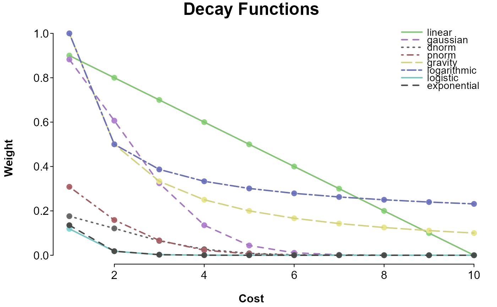

catchment_ratio.RdCalculate provider (supply) to consumer (demand) ratios within floating catchment areas.
catchment_ratio(consumers = NULL, providers = NULL, cost = NULL,
weight = NULL, normalize_weight = FALSE, scale = 2, max_cost = NULL,
adjust_consumers = NULL, adjust_providers = NULL, adjust_zeros = 1e-06,
return_type = "original", consumers_commutes = NULL,
consumers_id = "GEOID", consumers_value = "count",
consumers_location = c("X", "Y"), providers_id = "GEOID",
providers_value = "count", providers_location = c("X", "Y"),
distance_metric = "euclidean", verbose = FALSE)
catchment_weight(cost, weight = NULL, max_cost = NULL,
adjust_zeros = 1e-06, scale = 2, normalize_weight = FALSE,
verbose = FALSE)Number of consumers (demand); either a vector with consumer amounts (such as population counts),
or a matrix-like object with a column of IDs (located by consumers_id) and a column of amounts (located by
consumers_value).
Number of providers (supply); either a vector with provider amounts (such as number of doctors),
or a matrix-like object with a column of IDs (located by providers_id) and a column of amounts (located by
providers_value).
A matrix-like object of cost associated with each pair of consumers and providers
(such as distance or travel times), with consumers in rows and providers in columns.
cost's dimensions should be c(length(consumers), length(providers)) if consumers and
providers are vectors, or will be aligned by name if available (as vector names or in _id columns).
If NULL, coordinate information will be looked for in consumers and providers (based on
consumers_location and providers_location), from which to calculate Euclidean distances.
Costs equal to 0 are set to adjust_zeros by default, and any missing costs are then set to 0
-- if 0 indicates no connection in your cost matrix, set adjust_zeros to FALSE, or
set 0 to NA in your cost matrix.
Means of defining catchment areas and their topology / friction / impedance. The simplest is a single
number representing a maximum distance between consumers and providers (2-step floating catchment area;
2SFCA; Luo & Wang, 2003).
An enhancement of this is a list of vectors with two values each: the first is a distance, and the second a weight
to associate with that distance (e.g., list(c(10, 1), c(20, .5)), which will give consumers within a
cost of 10 full weight, and those within a cost of 20 half weight; enhanced 2-step floating catchment
area; E2SFCA; Lou & Qi 2009). If a character, refers to a weighting function (kernel density 2-step floating
catchment area; KD2SFCA; Dai, 2010; in order from most gradual to steepest between costs of 1 and 6):
linear (li) | {w <- (scale - cost) / scale; w[w < 0] <- 0; w} |
gaussian (ga) | exp(-cost^2 / (2 * scale ^ 2)) |
d* (name of a density function; e.g., "dnorm") | weight(cost, 0, scale) |
p* (name of a distribution function; e.g., "pnorm") | weight(-cost, 0, scale) |
gravity / normal (gr or n) | sqrt(1 / cost^scale) |
logarithmic (loga) | 1 / (1 + log(cost, scale)) |
logistic (l) | 1 / (1 + exp(scale * cost)) |
exponential (e) | exp(-cost * scale) |
If a function, this will be passed cost as its first argument -- its output should be a matrix
convertible to a sparse matrix, of the same dimensions as cost. If a matrix-like object,
this will be converted to a sparse matrix.
Logical; if TRUE, weight is row-normalized such that consumers weights
are spread across providers in range. This can help correct for the increased weight of consumers
when they are in range of multiple providers. Selection weights like this make the difference between 2-
and 3-step floating catchment areas (3SFCA; Wan, Zou, & Sternberg, 2012).
Numeric scaling factor if weight is the name of a decay function.
Numeric limit on cost. This is the same as setting weight to a single value,
or specifying a list of steps as weight (where the most distant step is effectively max_cost),
although a single-value weight is exclusive (cost < weight) where steps are inclusive. This is most useful
when weight is a weighing function, where max_cost will trim the tail of the weight distribution.
A function to adjust weights when applied to consumers or
providers; should take the sparse weight matrix as its first argument, and return an adjusted matrix of the
same type. For example, you could square provider weights for the modified 2-step floating catchment area
(M2SFCA; Delamater, 2013) with adjust_providers = function(w) w ^ 2, or standardize both weights for the
balanced floating catchment area (BFCA; Paez, Higgins, & Vivona, 2019) with adjust_consumers =
function(w) w / rowSums(w) and adjust_providers = function(w) sweep(w, 2, colSums(w), "/").
When weights are adjusted independently in this way, region scores will likely no longer sum to the sum
of providers (fewer than the total number of providers will be distributed).
A number to set real 0s to. Set to FALSE to prevent 0s from being adjusted.
Determines the values that are returned: "original" (default) for providers
per consumers (e.g., how many, likely fractional, doctors are accessible by each person within each region),
"region" for number of providers per consumers entry (consumers * original; e.g.,
how many doctors are accessible within each region), or "normalized" for original divided by
sum(region) / sum(consumers). Can also be a number by which to multiply the original values (e.g., 1000
for providers per 1,000 consumers). Alternatively "supply" will return just the
number of resources allocated to each consumer location (total weighted resources within each consumer's catchment area),
or "demand" will return just the population per provider (total weighted population within each provider's catchment area).
A square, consumers source x consumers origin matrix with counts of origins,
used to specify multiple possible origins for each consumer location (e.g., consumers living in location 1
may work in locations 1 and 3, so the first row of consumers_commutes should have values in columns 1 and 3).
This can also be entered in place of consumers, assuming it includes all consumers (e.g., in a worker commute
matrix, you may need to add non-workers to the diagonal, if they are also consumers).
Column
names in consumers and/or providers to extract IDs, values, and location data (referring to a single
sf geometry column, or multiple columns with coordinates). These can also be used to directly enter
ID, value, and/or location vectors (or matrices for location coordinates).
Name of the distance metric to be used, if costs are being calculated from coordinates;
defaults to "euclidean"; see lma_simets.
Logical; if TRUE, will print logs, and the type of floating catchment area that was calculated.
catchment_ratio: A vector with a ratio (determined by return_type)
for each entry in consumers. If return_type is "supply", values
will be the number of resources within the location, rather than a ratio.
If return_type is "demand", the vector will have an entry for each provider
rather than consumer location, and values will be number of consumers.
catchment_weight: A sparse matrix of weights.
Dai, D. (2010). Black residential segregation, disparities in spatial access to health care facilities, and late-stage breast cancer diagnosis in metropolitan Detroit. Health & place, 16, 1038-1052. doi: 10.1016/j.healthplace.2010.06.012
Delamater, P. L. (2013). Spatial accessibility in suboptimally configured health care systems: a modified two-step floating catchment area (M2SFCA) metric. Health & place, 24, 30-43. doi: 10.1016/j.healthplace.2013.07.012
Lou, W. & Qi, Y. (2009). An enhanced two-step floating catchment area (E2SFCA) method for measuring spatial accessibility to primary care physicians. Health & Place, 15, 1100-1107. doi: 10.1016/j.healthplace.2009.06.002
Luo, W. & Wang, F. (2003). Measures of spatial accessibility to health care in a GIS environment: synthesis and a case study in the Chicago region. Environment and Planning B: Planning and Design, 30, 865-884. doi: 10.1068/b29120
Paez, A., Higgins, C. D., & Vivona, S. F. (2019). Demand and level of service inflation in Floating Catchment Area (FCA) methods. Plos one, 14, e0218773. doi: 10.1371/journal.pone.0218773
Wan, N., Zou, B., & Sternberg, T. (2012). A three-step floating catchment area method for analyzing spatial access to health services. International Journal of Geographical Information Science, 26, 1073-1089. doi: 10.1080/13658816.2011.624987
pop <- c(5, 10, 50)
doc <- c(50, 100)
travel_time <- matrix(c(5, 50, 25, 70, 40, 30), ncol = 2)
# 2-step floating catchment area
catchment_ratio(pop, doc, travel_time, 30)
#> [1] 0.9090909 0.0000000 0.9090909
# kernel density (Gaussian) 2-step floating catchment area
catchment_ratio(pop, doc, travel_time, "gaussian")
#> [1] 1.000000e+01 1.383897e-85 2.678637e-32
# enhanced 2-step floating catchment area
step_weights <- list(c(60, .22), c(40, .68), c(20, 1))
catchment_ratio(pop, doc, travel_time, step_weights)
#> [1] 1.213592 1.933657 2.491909
# modified 2-step floating catchment area
catchment_ratio(pop, doc, travel_time, step_weights, adjust_providers = function(m) m^2)
#> [1] 1.213592 1.192071 1.694498
# balanced 2-step floating catchment area
catchment_ratio(
pop, doc, travel_time, step_weights,
adjust_consumers = function(w) sweep(w, 1, rowSums(w), "/", FALSE),
adjust_providers = function(w) sweep(w, 2, colSums(w), "/", FALSE),
)
#> [1] 0.8111031 1.7142789 2.0873863
# 3-step floating catchment area
catchment_ratio(pop, doc, travel_time, step_weights, normalize_weight = TRUE)
#> [1] 2.218497 2.440125 2.290125
# visualized weight functions
if (require("splot", quietly = TRUE)) {
cost <- 1:10
scale <- 2
splot(list(
linear = (10 - cost) / 10,
gaussian = exp(-cost^2 / (2 * scale^2)),
dnorm = dnorm(cost, 0, scale),
pnorm = pnorm(-cost, 0, scale),
gravity = sqrt(1 / cost^scale),
logarithmic = 1 / (1 + log(cost, scale)),
logistic = 1 / (1 + exp(scale * cost)),
exponential = exp(-cost * scale)
) ~ cost, title = "Decay Functions", laby = "Weight", labx = "Cost", lines = "con", note = FALSE)
}

# gives weight only to costs under 2
catchment_weight(matrix(c(1, 2, 1, 3, 1, 2), 3), 2)
#> 3 x 2 sparse Matrix of class "dgCMatrix"
#>
#> [1,] 1 .
#> [2,] . 1
#> [3,] 1 .